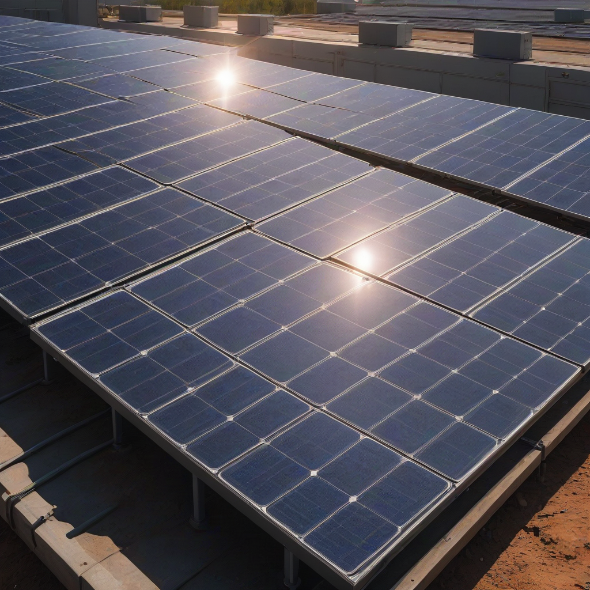
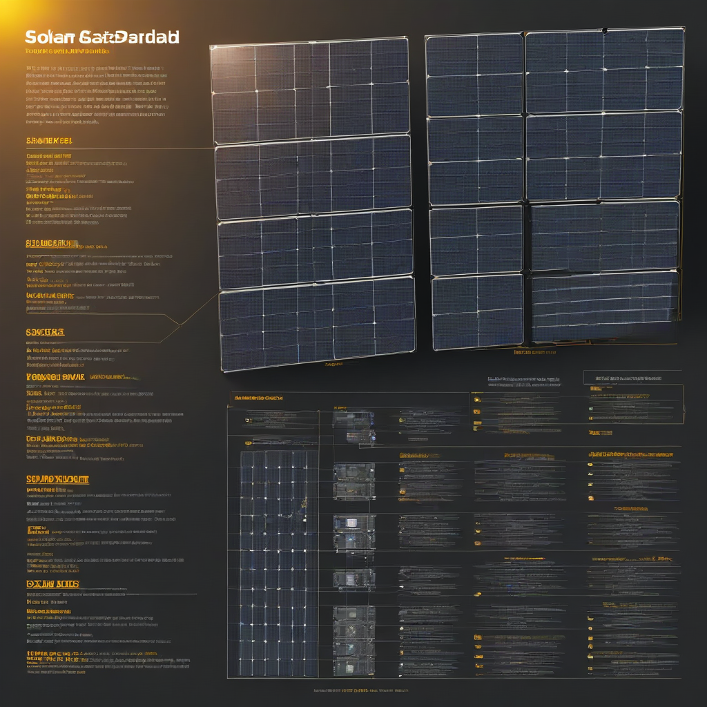

Solar panels typically last 25–30 years, with most manufacturers offering 25-year product and performance warranties. Even after 25 years, panels usually still produce 80–90% of their original output. With proper installation and minimal maintenance, your solar system can generate clean, low-cost electricity well into the 2050s.
Thinking about going solar? One of the most common—and smart—questions homeowners ask is: How long do solar panels last? The answer isn’t just a number; it’s the foundation of your long-term savings, energy independence, and return on investment. Modern photovoltaic (PV) panels are built to endure decades of sun, wind, rain, and even hail, but longevity depends on quality, installation, and environment. In 2026, with solar costs lower and efficiency higher than ever, your decision today can power your home for generations.
Understanding your panels’ lifespan helps you compare options, estimate payback periods, and avoid costly early replacements. A 30-year system isn’t just an appliance—it’s infrastructure. And with the federal solar tax credit still at 30% through 2032, getting the most out of your investment over time is more valuable than ever.
In this guide, we’ll break down the real-world durability of solar panels, walk through 2026 pricing and incentives, and help you choose a system that delivers decades of reliable performance—no guesswork, just facts from industry data and user reviews.
What Is How Long Do Solar Panels Last?

Simple Explanation
Solar panels degrade slowly over time—losing about 0.5% of output per year on average. That means after 25 years, a typical panel still produces 87.5% of its original nameplate capacity. Most high-quality panels last 30+ years before hitting “end of life” (defined as <20% degradation).
Key Components That Affect Longevity
- Photovoltaic cells (monocrystalline silicon dominates in 2026—most durable)
- EVA encapsulant (protects cells from moisture; yellowing = early degradation)
- Backsheet (prevents electrical faults; cracked backsheets cause premature failure)
- Frame and junction box (aluminum frames resist corrosion; high-quality seals keep moisture out)
Why Homeowners Care
Your solar system is one of your biggest home upgrades. If it

Cost Breakdown (2026)
2026 Pricing Snapshot
The average cost to install a 6-kW solar system in the U.S. in 2026 is:
- Panel-only: $2.50–$3.50/watt ($15,000–$21,000 gross)
- Full turnkey system (panels + inverter + mounting + labor): $2.80–$3.80/watt ($16,800–$22,800)
- With battery storage:
- Tesla Powerwall: $11,500–$15,500 (installed)
- Enphase IQ Battery 3T: $4,000–$8,000 (per unit, 13.5 kWh)
Federal Tax Credit
The 30% Inflation Reduction Act (IRA) tax credit applies to systems installed before 2033. For a $20,000 system, that’s a $6,000 federal tax credit—directly reducing your tax liability or refund.
State Incentives (2026 Highlights)
Check your state’s solar incentives—many stack with the federal credit:
- California (SGIP): Up to $2,000/kWh for battery storage (income-qualified)
- New York (RENEW NY): 25% state tax credit, up to $5,000
- Florida (net metering): 1:1 credit for exported solar (no cap through 2027)
- Texas (ERCOT solar incentives): Local utility rebates up to $1,000
DSIRE database is your best resource for up-to-date local incentives.
Key Factors to Consider
Sizing Calculator
Don’t guess your system size. Use a solar sizing calculator to match your usage, roof angle, and shading. Oversizing slightly (120% of needs) can extend inverter life and prepare for future EVs or heat pumps.
Efficiency Ratings
Higher efficiency panels (22%+ in 2026) generate more power per square foot—but efficiency ≠ longevity. What matters more is:
- PID resistance (potential-induced degradation)
- Snail-trail resistance (black lines on cells)
- Wind and hail ratings (ASTM E1036 tested)
Warranty Terms
Always compare both warranties:
- Product warranty: 12–15 years for defects (some premium brands offer 25)
- Performance warranty: 97–98% output in Year 1, then ≤0.45% annual degradation (top brands like LG, Panasonic, SunPower lead here)
Tip: A 25-year linear performance warranty guarantees ≥80.2% output at Year 25 (0.45% × 25 = 11.25% degradation).
Top Options and Recommendations
2026 Panel Brand Comparison
| Brand | Efficiency (%) | Power Warranty (25-yr) | Product Warranty | 2026 Avg. Cost/Watt |
|---|---|---|---|---|
| SunPower (Maxeon) | 22.8 | 92% @ 25 yrs | 25 years | $3.50 |
| LG NeON R | 21.7 | 90% @ 25 yrs | 25 years | $3.30 |
| Panasonic EverVolt | 22.2 | 90% @ 25 yrs | 25 years | $3.40 |
| Canadian Solar HiKu7 | 21.1 | 88% @ 25 yrs | 12 years | $2.60 |
| Longi HR6 | 22.3 | 88% @ 25 yrs | 10 years | $2.50 |
Data sources: EnergySage 2026 Solar Marketplace Report, NREL PV Reliability Database
Real User Reviews (2025–2026)
- SunPower owners: “10 years in, panels still hit 95% output. Worth the premium.”
- Longi users: “Great value, 27-kW system in Arizona—only 1.2% degradation in 3 years.”
- First Solar (thin-film): “Best for hot climates (lower temp coefficient), but harder to find installers.”
EnergySage’s 2026 solar panel brand comparison shows SunPower leads in longevity, while Canadian Solar leads in value per watt.
Performance Data
NREL tracking data shows:
- Monocrystalline panels degrade at 0.3–0.5%/year (top-tier: ≤0.35%)
- Poorly installed or salt-coastal systems may degrade 0.8%/year or more
- Hybrid (panel + battery) systems show no extra panel degradation—batteries reduce stress on inverters, not panels
panels with anti-PID (Potential Induced Degradation) technology last longest in high-heat, high-humidity states like Florida and Texas.
Frequently Asked Questions
Is it worth it if panels only last 25–30 years?
Yes—emphatically. Your solar system pays for itself in 5–9 years (2026 average payback period), then generates free electricity for 15–25 more. Over 30 years, a 6-kW system saves $25,000–$45,000 in electricity costs (NREL estimate), adjusted for inflation.
How long does it last—really?
Most panels outlast warranties. NREL studies show:
- 80% of panels installed before 2010 still operate above 80% capacity
- Real-world failures are rare: 0.05% per year (mostly due to installation flaws, not panels)
Replacing a panel after 30 years is like replacing a car engine at 300,000 miles—it’s possible, but not required for operation.
What maintenance do solar panels need?
Almost none. Annual checks for debris (leaves, bird nests) and occasional cleaning (rain usually suffices) are enough. In dusty or snowy areas:
- Use soft brush + hose (no pressure washers)
- Trim overhanging branches
- Monitor your inverter/app for sudden output drops
Professional inspections every 5–10 years cost $150–$300 but catch issues early.
Do inverters last as long as panels?
No—this is critical. String inverters last 10–15 years; microinverters (Enphase, Apple) last 25 years. Plan to replace your inverter once during your system’s life. Budget $1,200–$2,500 for replacement.
How do I know if my panels are failing early?
Watch for these signs:
- Sudden >5% drop in daily output (check your monitoring app)
- Hot spots visible via thermal drone scan
- Visible cracking, delamination, or yellowed EVA
- Fire hazards (rare: usually from faulty wiring, not panels)
Covered by warranty? File a claim immediately—most brands ship replacement panels within 30 days.
Conclusion
Summary
Solar panels last 25–30+ years, with top-tier models retaining 80–90% output at Year 25. In 2026, with federal tax credits and low installation costs, going solar delivers unmatched long-term value—if you choose quality hardware and reputable installers.
Action Items
- Run your numbers: Use our ROI calculator with 2026 data.
- Prioritize performance warranty: Choose brands guaranteeing ≤0.4%/year degradation.
- Ask installers: “What’s your panel failure rate in the last 5 years?”
- Get 3 quotes: Use EnergySage to compare real bids.
- Install microinverters: Longer life = fewer future replacements.